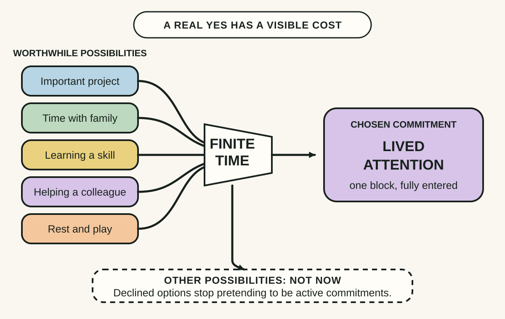
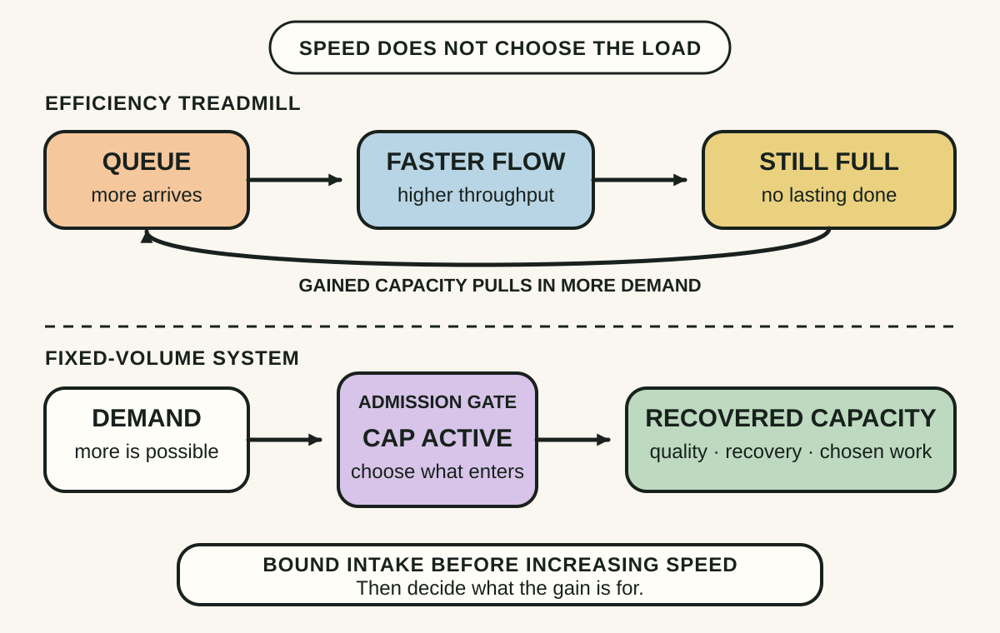
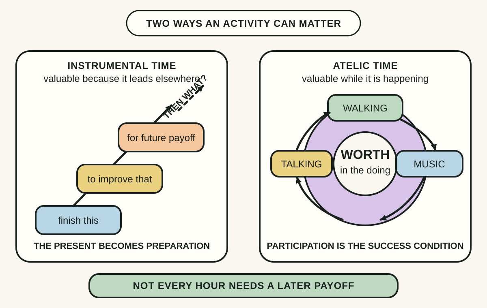

Daily lesson ·
Four Thousand Weeks
Use finite time deliberately by choosing what to neglect, refusing the treadmill of unlimited throughput and protecting activities whose value is in the doing rather than a future payoff.
Idea 1
Finitude makes the choice real #
The idea
Burkeman argues that the core time-management problem is not a missing technique but the fact that a finite life cannot contain every worthwhile possibility. Trying to keep all options open postpones the losses built into choosing, yet it also prevents full commitment to the work, people or places that receive the time.
Facing finitude changes selection from a temporary scheduling problem into a value decision. A meaningful yes spends time that cannot also be spent elsewhere. The resulting discomfort is not proof that the choice is wrong; it is often the felt cost of making any real commitment.

Why it matters
An uncapped project list can disguise avoidance as ambition. At work and at home, naming the trade-off makes priorities credible, reduces half-started commitments and lets attention reach something that matters before another demand claims it.
Apply it today
Write the three most worthwhile things competing for your next uninterrupted block.
Choose one and state why this block belongs to it.
Write not now beside the other two, including when or whether you will reconsider them.
Caveat or failure mode
Choice is never distributed equally. Caring duties, insecure work, illness and financial pressure can consume time without reflecting freely chosen values. Accepting finitude can clarify the remaining discretion, but it must not turn exploitation or inadequate support into an individual's failure to prioritise.
Idea 2
Efficiency can feed the queue #
The idea
Burkeman calls it the efficiency trap: increasing the rate at which you handle demands often encourages more demands to arrive or makes a larger backlog visible. Faster email can produce more email, a responsive colleague can receive more requests and saved time can be filled with additional work. Throughput rises without delivering the lasting state of being done that the efficiency was meant to create.
His practical alternative is a fixed-volume approach. Limit how much work can be active, keep one bounded queue and resist replacing every completed item immediately. Efficiency then serves choices already made instead of silently expanding the number of commitments.

Why it matters
Teams can automate, batch and accelerate while remaining permanently overloaded. A visible intake boundary turns capacity into a decision: it can shorten lead time, improve quality, create recovery space or serve a chosen priority instead of becoming an invitation for more work.
Apply it today
Choose one queue that never feels finished, such as requests, messages or personal tasks.
Set a small maximum for active items and define what qualifies to enter today.
When one item finishes, pause before replacing it and decide where the released capacity should go.
Caveat or failure mode
Efficiency is valuable in a genuinely bounded process and can remove waste, delay or drudgery. The trap is not speed itself but using speed without a demand boundary or purpose. Fixed limits also need an explicit path for emergencies, care obligations and work whose delay would cause disproportionate harm.
Idea 3
Let some time be an end in itself #
The idea
Burkeman argues that modern time pressure encourages an instrumental relationship with nearly everything: work is endured for advancement, exercise for health data and leisure for recovery that will improve later output. When each present activity is merely a step toward a future result, life can feel like something to finish rather than something being lived.
He defends atelic activities, which do not aim at a final state after which they are complete. Walking, talking with a friend, playing music or tending a garden can be worth doing while they are happening. Their value does not depend on making the participant more productive afterward.

Why it matters
A life composed only of preparation can postpone satisfaction indefinitely. Activities valued in the present can restore attention to relationships, play, rest and craft without demanding that every hour justify itself through a later result.
Apply it today
Choose one activity you value but usually measure by an outcome, such as a walk, music, gardening or conversation.
Give it ten or fewer minutes with no distance, output, streak, post or improvement target.
At the end, record only whether you were present for the activity, not whether it advanced another goal.
Caveat or failure mode
Goals and measurement are not enemies of meaning, and many necessary activities are unavoidably instrumental. Atelic time can also be hard to access amid care, pain, unsafe work or scarcity. The distinction is a lens for protecting some present value, not a demand to enjoy every moment or abandon useful ambition.
Knowledge check · 6 questions
Learning check
Answer all 6, then check your answers. Your first result stays in this browser, and each explanation appears after you check. A 3-question review can appear on the homepage from tomorrow.
6 questions not yet answered.
Today's experiment · 8 minutes
Make one finite-time commitment
- List five worthwhile demands competing for your attention today.
- Circle one that deserves the next finite block and write the value it protects.
- Cross out or defer one demand explicitly instead of leaving all five psychologically active.
- Use the remaining minutes to begin the chosen commitment, then stop with the boundary intact.
Observable result: You finish with one visible commitment, one deliberate non-priority and observable progress made without expanding the active queue.
Retrieval practice
Spaced recall
- From The Psychology of Money: how does defining enough change the risk you are willing to take for a larger score?
- From The Art of Gathering: how does a specific purpose help decide what must be excluded from an event?
- From The Mythical Man-Month: why can adding capacity fail to shorten tightly coupled work?
Verification
Source notes
These links support the attributed claims and edition details; applications and extensions are labelled in the lesson.
- Penguin: Four Thousand Weeks, 2022 paperback details and book description
- Macmillan: official book page and Limit-Embracing Life excerpt
- Oliver Burkeman: official book page
- Oliver Burkeman: You don't need to fight time
- Penguin: book extract on a purposeless walk and atelic value
- The Guardian: author extract on attention, distraction and limitation
One-sentence takeaway